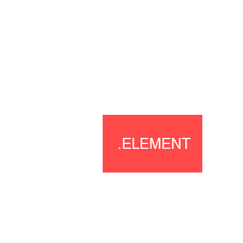

Développement web
Cours 03
CSS
Cascading Style Sheet
Le CSS permet de donner du style à notre page HTML
On va pouvoir changer la couleur du texte, mettre une image de fond, créer des marges, etc.
Par défaut certaines balises possède déjà un style
Par exemple, le texte dans les balises <h1> paraîtra plus gros car c'est un titre
Il existe deux façon de rajouter du style dans la page
Avec la balise <style> dans le <head>
<!doctype html>
<html>
<head>
<meta charset="UTF-8">
<title>Titre de la page</title>
<style>
Mon style ici
</style>
</head>
<body>
Hello World
</body>
</html>
A éviter dans un souci de maintenabilité
Avec la balise <link> dans le <head> faisant un lien vers un fichier .css qui contiendra le style
<!doctype html>
<html>
<head>
<meta charset="UTF-8">
<title>Titre de la page</title>
<link rel="stylesheet" href="style.css">
</head>
<body>
Hello World
</body>
</html>
On peut appeler plusieurs fichiers CSS pour une page
On peut appeler un même fichier CSS pour deux pages
Créez un fichier style.css dans le même répertoir que vos pages HTML
Ajoutez ce code dans la balise <head> de votre page HTML
<link rel="stylesheet" href="style.css">
Sélecteurs
h1 { color: red; }
Sélectionne toutes les balises h1 dans la page HTML et leur donne une couleur rouge
h1 { color: red; }
- La première partie h1 est appelée sélecteur
- La deuxième partie color: red; entre accolades { } correspond au style
Ce même code peut s'écrire de plusieurs façons
h1 { color: red; }
h1{color:red;}
h1 {
color: red;
}
h1
{
color: red;
}
Dans un souci de lisibilité des slides, le CSS sera présenté ainsi
h1 { color: red; }
<h1 class="toto">Titre en rouge</h1>
<h1>Titre normal</h1>
.toto { color: red; }
Sélectionne toutes les balises ayant la classe toto dans la page HTML et leur donne une couleur rouge
<h1 id="toto">Titre en rouge</h1>
<h1>Titre normal</h1>
#toto { color: red; }
Sélectionne la première balise ayant l'ID toto dans la page HTML et lui donne une couleur rouge
h1:hover { color: red; }
Sélectionne toutes les balises h1 dans la page HTML et leur donne une couleur rouge lorsque le curseur passe dessus
Il est possible de les combiner
h1 { color: blue; }
h1:hover { color: red; }
Les h1 seront tous bleu par défaut et rouge lorsque le curseur passera dessus
h1 { color: blue; }
h1 { color: green; }
Si les selecteurs sont les mêmes, les propriétés de la dernière écraseront les propriétés des autres
Les h1 seront donc verts
h1.toto { color: blue; }
h1 { color: green; }
Si les selecteurs sont différents, les propriétés du selecteur le plus fort écraseront les propriétés des autres
La force est définie par divers facteurs que nous ne verrons pas mais les h1 seront bleus
h1, h2, h3 { color: red; }
Sélectionne tous les h1, h2 et h3 et leur donne la couleur rouge
<h1>Salut <span>tout le monde</span></h1>
h1 span { color: red; }
Séléctionne les span se trouvant dans des h1 et leur donne la couleur rouge
Exercice
Propriétés
h1 { color: red; background: blue; font-size: 20px; }
La partie entre accolades { } contient les propriétés qui vont définir le style de l'élément sélectionné
Ces propriétés sont séparées par des points virgules ;
Les h1 apparaîtront en rouge avec un arrière plan bleu et une taille de police de 20 pixels
Certains préfèrent écrire ainsi
h1 {
color: red;
background-color: blue;
font-size: 20px;
}
Les retours à la ligne n'ont aucune importance
Color
p { color: red; }
p { color: #ff0000; }
p { color: rgb(255, 0, 0); }
p { color: hsl(0, 100%, 50%); }
Chacun de ces lignes a le même effet, rendre le texte rouge
Font-family
p { font-family: Georgia; }
Change la police du texte
La police doit être installée sur l'ordinateur
Font-family
p { font-family: "Lucida Sans Unicode"; }
Si le nom de la police contient des espaces, il faut la mettre entre guillemets
Font-family
p { font-family: Helvetica, Arial, sans-serif; }
Si plusieurs polices sont spécifiées (séparées par des virgules) la première est utilisée si disponible, sinon la suivante
Font-size
p { font-size: 40px; }
Change la taille de la police
Font-style
p { font-style: italic; }
Permet de mettre un texte en italic
Font-weight
p { font-weight: bold; }
Valeurs : normal, bold, lighter, 100, 200, 300, 400, 500, 600, 700
Change l'epaisseur de la police
Si la police n'existe pas dans l'épaisseur spécifiée, certains navigateurs vont eux-même générer l'épaisseur
Line-height
p { line-height: 30px; }
Change la hauteur des lignes
Text-align
p { text-align: center; }
Valeurs : left, center, right
Change l'alignement horizontal du text
Text-transform
p { text-transform: capitalize; }
Valeurs : none, lowercase, uppercase, capitalize
Change la casse (minuscules, majuscules, capitales)
Text-decoration
p { text-decoration: underline; }
Valeurs : underline, line-through, overline, none
Rajoute une bar en dessous, au dessus ou à travers le text
Opacity
p { opacity: 0.5; }
Change l'opacité de l'élément
background-color
p { background-color: #ff0000}
Change la couleur de fond
Même valeurs que pour la propriété color
background-image
p { background-image: url('https://bruno-simon.com/esin/e1-p2026/resources/image-1.jpg'); }
Rajoute une image de fond
L'URL peut être en absolu ou en relatif
background-repeat
p { background-repeat: no-repeat; }
Valeurs : repeat, repeat-x, repeat-y, no-repeat
Répétition du background
background-position
p { background-position: right bottom; }
Valeurs horizontales : left, center, right
Valeurs verticales : top, center, bottom
Alignement horizontal ET vertical du background
background
p { background: #ff0000 url('https://bruno-simon.com/esin/e1-p2026/resources/image-1.jpg') right bottom no-repeat; }
Version shorthand
On écrit toutes les valeurs à la suite
background-size
p { background-size: cover; }
Valeurs : cover, contain, auto
Permet de définir comment le background doit remplir l'élément tout en gardant son ratio
Width
p { width: 200px; }
Change la largeur de l'élément
Min-width / Max-width
p {
min-width: 200px;
max-width: 400px;
}
Change la largeur minimum et maximum de l'élément
Height
p { height: 200px; }
Change la hauteur de l'élément
Min-height / Max-height
p {
min-height: 200px;
max-height: 400px;
}
Change la hauteur minimum et maximum de l'élément
Padding
p { padding: 20px; }
Rajoute une marge intérieur de tous les côtés
Padding
p {
padding-top: 40px;
padding-left: 20px;
}
Rajoute une marge intérieur en haut ET à gauche uniquement
Padding
p { padding: 40px 0 0 20px; }
Même chose, mais en version shorthand
Margin
p { margin: 20px; }
Rajoute une marge extérieur de tous les côtés
Margin
p {
margin-right: 40px;
margin-bottom: 20px;
}
Rajoute une marge extérieur à droite ET en bas uniquement
Margin
p { margin: 0 40px 20px 0; }
Même chose, mais en version shorthand
Border
p { border: 5px solid #ff0000; }
Valeurs de style : solid, dotter, dashed
Rajoute un bord rouge de 5px de chaque côté
Display
p { display: inline; }
Valeurs de style : inline, block, inline-block
Force l'élément à se comporter comme un inline
Positionnement
Permet de placer l'élément selon différents critères
Il existe plusieurs types de positionnement
Positionnement relatif
.element {
position: relative;
}
Ce code indique que l'élément va pouvoir être déplacé relativement à sa position d'origine
Positionnement relatif
.element {
position: relative;
top: 60px;
left: 100px;
}
L'élément va être déplacé de 100px vers la droite et 60px vers le bas par rapport à sa position d'origine
Positionnement relatif
Positionnement relatif
.element {
position: relative;
top:-100px;
left:-40px;
}
L'élément va être déplacé de 100px vers le haut et 40px vers la gauche par rapport à sa position d'origine
Positionnement relatif
Positionnement fixe
.element {
position: fixed;
}
Ce code indique que l'élément va être placé toujours de la même manière par rapport à l'écran
Positionnement fixe
.element {
position: fixed;
top: 80px;
left: 20px;
}
L'élément va être positionné en parmanence à 80px du haut de l'écran et 20px de la gauche de l'écran
Positionnement fixe
Positionnement fixe
.element {
position: fixed;
right: 0;
bottom: 0;
}
L'élément va être positionné en parmanence à 0px du bas de l'écran et 0px de la droite de l'écran
Positionnement fixe
Positionnement fixe
.element {
position: fixed;
right:-30px;
bottom: 0;
}
L'élément va être positionné en parmanence à 0px du bas de l'écran et 30px en dehors de l'écran à droite
Positionnement fixe

Positionnement absolu
.element {
position: absolute;
}
L'élément va se placer en absolu par rapport à son parent le plus proche ayant un positionnement (relatif, fixe ou absolu)
Positionnement absolu
.container {
position: relative;
}
.container .element {
position: absolute;
bottom: 10px;
left: 10px;
}
L'élément va être positionné à 10px du bas de .container et 10px de la gauche de .container
Positionnement absolu
Positionnement absolu
Si .container n'avait pas eu de positionnement, .element aurait tenté de se positionner par rapport à l'élément parent suivant
Positionnement absolu
.container {
position: relative;
}
.container .element {
position: absolute;
top: 50%;
left:-30px;
}
L'élément va être positionné à 50% du haut de .container et -30px de la gauche de .container
Positionnement absolu
Overflow
.container {
position: relative;
overflow: hidden;
}
.container .element {
position: absolute;
top: 50%;
left:-50px;
}
Valeurs de style : visible, hidden
Permet de faire disparaitre ce qui dépasse de l'élément
overflow
Z-Index
.element-1 { z-index: 2; }
.element-2 { z-index: 1; }
Par défaut, si deux éléments sont l'un sur l'autre, le dernier dans le code apparait par dessus l'autre
z-index permet de changer cet ordre
La valeur doit être n'importe quel nombre positif
Liste des propriétés CSS : www.w3schools.com/cssref/default.asp